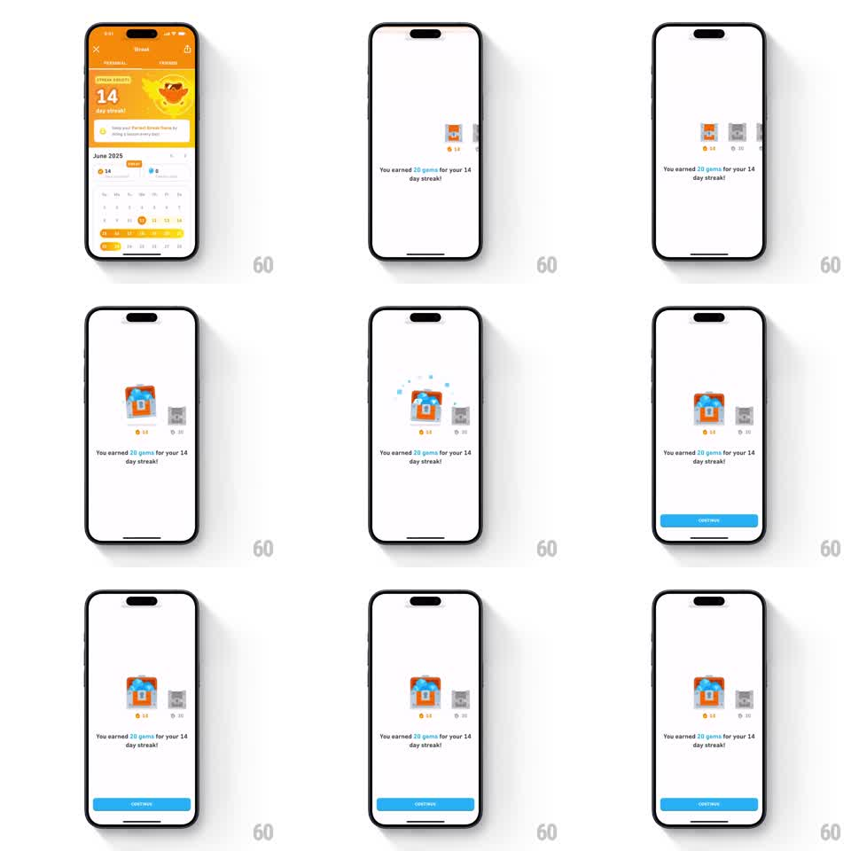

Media
Frame-by-frame

Rebuild this animation 1:1: Duolingo's streak gem reward - from the orange Streak screen (14 day streak, June 2025 calendar), the view transitions to a white reward screen where a small chest next to a gray locked chest pops open with blue gems and sparkle particles, showing "You earned 20 gems for your 14 day streak!" with a blue CONTINUE button sliding up.

Rebuild this animation 1:1: Duolingo's streak gem reward - from the orange Streak screen (14 day streak, June 2025 calendar), the view transitions to a white reward screen where a small chest next to a gray locked chest pops open with blue gems and sparkle particles, showing "You earned 20 gems for your 14 day streak!" with a blue CONTINUE button sliding up.
## Integration
Integration: stack-agnostic spec - springs given as stiffness/damping, timed motions as duration + curve; map every value to your framework and animation library of choice.
## Scene
Start: the orange Streak tab screen ("14 day streak", June 2025 calendar with streak days highlighted). Reward screen: white background, center row of two small chests - the left one orange/gold opening with blue gems, the right one gray and locked with "30" beneath it (the next milestone), "14" under the earned chest. Message: "You earned 20 gems for your 14 day streak!" Blue CONTINUE button.
## Motion spec
Pattern: small chest pop with gems and next-milestone tease.
- Transition from the streak screen: the reward screen slides up (300ms ease-out).
- The earned chest and the gray locked chest slide in side by side (translateY 24pt -> 0, spring ~300/18, 80ms stagger) with their day labels.
- The earned chest pops its lid (spring ~340/14), gems burst up (6-8 gem sprites, 300ms radial with gravity) with sparkles, then settle inside.
- The message fades in below (250ms); CONTINUE slides up (280ms).
- The gray "30" chest stays locked but rocks gently (rotate +/-2deg, 3s sine) - a tease for the next milestone.
- Idle: gem twinkles inside the open chest every 2s.
## Calibration
- This chest is smaller and simpler than the league chest - the motion matches its scale.
- The locked chest never opens; its rock is subtle longing, not attention-seeking.
## Reduced motion
Chests appear in final state, message and button fade in (250ms).
## Don't miss
- Day labels anchor the chests: 14 earned, 30 locked - progression is explicit.
- The orange streak context is left behind; the reward screen is plain white.